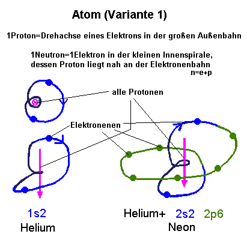
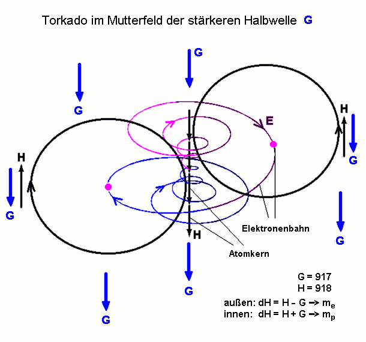
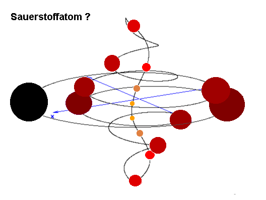

|
Es gibt nur Äther, sonst nichts, und zwar in vielfachen Bewegungs-Hierarchien. Elektronen sind Ätherverdichtungen in eigener Torkadostruktur. Sie sind also geordnet-bewegter Äther als Überdruck-Formation. Sie folgen den Ätherflüssen ihrer Hierarchie, die das Atom bilden. H-Linien
sind kalte ätherdünne Gebiete, wie luftleer gepumpte Rohrpostleistungen,
und umgeben spiralig die Teilchenbahnen als begleitender Äther-Unterdruck.
Dichte kalte
Magnetlinienbündel befinden sich in der tiefsten Mitte jeden Torkados
- ganze Rohrpostbündel, wie wir sie auch von (gebündelten) Nervenbahnen
kennen. Dass
Elektronen eine Ausdehnung haben, wird hier beachtet. Aber was ist mit
ihrer Drehachse und den Magnetpolen ? Spielen sie keine Rolle ? Die Physik
beschreibt sie als negative Punktladungen, für uns wenig hilfreich.
Reisen sie mit ihrem Südpol voran ? Oder schwimmen sie wie eine Boje
auf der Ätherströmung, mit raumfester Achse wie die Erde auf
ihrer Jahresbahn ? Oder machen sie einen 'Überschlag', wenn sie in
den Südpol eintauchen und aus dem Nordpol herauskommen (Polsprung
?) ? Wird das Elektron nach dem Polsprung im Innenschlauch zum Positron
? Müssen wir dann statt der rechten Hand die linke nehmen, um eine
Magnetfeldrichtung zu ermitteln, wenn das Elektron im Mittelschlauch nach
oben schwimmt und dabei 'kopfsteht' ? Immerhin ist seine negative Ladung
als Teil der Elektronenhülle definiert, noch 'vor' dem eventuellen
Kopfstand. Den Bewegungszustand als Teil des Neutrons (nächster Abschnitt)
konnte noch keiner beobachten.
Was ist ein Atom ?Pro
Proton im Atomkern gibt es in der Hülle je ein Elektron. Die inneren Spiralen
(schmaler innerer Aufwärtsschlauch) zeigen die Zahl der Neutronen
n, die äußeren Spiralen (breiter Abwärtsschlauch) die von p=e . Das
Proton sieht man nicht, weil es gar nicht existiert. Es ist nur das zum
Elektron gehörige Drehachsen-H-Feld, summiert in der Nähe der
Mittelachse des Torkados. Dabei liegen im schmalen Mittelschlauch logischerweise
e und p so eng zusammen, daß man beide zusammen als neutrales Teilchen
Neutron n registriert. Ein Übergang zwischen verschiedenen Elementen und
Isotopen gleicher Masse (Transmutation) wäre nur eine Phasenverschiebung
im Torkado: Mehr Windungen innen, weniger außen oder umgekehrt. Die Abtrennung
eines Neutrons wäre der Verlust einer ganzen inneren Windung, die sich
herauslöst aus dem Wirbel und als einzelner solitonenartiger Potentialwirbel
wegfliegt. Das kommt nur mit viel Gewalt vor, wie im Kernreaktor. Im Grunde
genommen ist dann ein einzelnes Neutron ein Instant-Wasserstoffatom, es
bleibt noch eine Weile zusammengepreßt, wie es vom inneren Wirbelschlauch
geformt wurde, um dann sich zu öffnen zum ehemaligen p und e (Neutronenzerfall).
Geordnet
strömender Äther hat immer Unterdruck gegenüber chaotischerem
Äther. Das trifft auch auf das einbettende Mutterfeld zu, es trägt
positive Ladung, die in Flussrichtung zeigt. Wird ein Wasserstoffatom "richtig" im Mutterfeld ausgerichtet, dann befindet sich außen die Elektronenhülle, deren H-Held außen das Mutterfeld kompensiert (H-G in Abb. 2.5). Steht es "auf dem Kopf" (bezüglich Mutterfeld), zeigt das begleitende H-Feld außen nach unten, verdoppelt es dabei und wir detektieren es als Proton (Ion). Wir müssen ihm ständig Energie liefern (E-Feld antreiben), um es in diesem Zustand zu halten. Ein Proton ist chemisch sehr aggressiv und versucht von selbst, in einen günstigeren Zustand zu kommen.
QuantisierungDer
Torkado kann nur "Form behalten", wenn er geschlossen ist. Die
kleine Drehung muß ganzzahlig in die große passen. Wenn also die Aura
sich ausdehnt (energetische Anregung des Elektrons), kann erst dann ein
größerer Torkado entstehen, wenn eine ganze Windung mehr hineinpaßt (umgekehrt
beim Rücksprung). In atomaren Dimensionen hat man dafür die Drehimpulsquantisierung
(+Plancksches Wirkungsquantum) gefunden. Es muß auch für alle
größeren Strukturebenen eine analoge Quantisierung geben, wie
etwa die molekulare, zelluläre, organische, planetarische usw. . Hier erste Ideen zum Termschema der Atome:  Zu
Abb 2.4: Es kann auch sein, daß alle Orbitale 'auf einer Schnur
sind', daß jedes Elektron nacheinander alle Schalen durcheilt. Dann
müßte im engen Innenschlauch jeweils ein Orbital an das nächste
anschließen und nicht mit sich selbst geschlossen werden. Dann könnte
man aus dem Kupferatom eine einzige geschlossene Perlenkette mit 29 Perlen
machen (Plasmazustand?), die vielleicht ein einziges s29-artiges-Orbital
durchläuft. Diese zusätzliche Ketten-Einheit würde die
innere Stabilität der Atome noch besser erklären.  Abb. 2.5 In Abb. 2.5 erkennt man die Bildung der Kernmasse im Zentrum der Rotationen als Vektorsumme H+G. Wegen der durchgängig beibehaltenen Drehrichtung 'Rechts' findet man mit Hilfe der Rechte-Hand-Regel sowohl außen abwärtsführend (Ergebnis: Proton) als auch innen aufwärtsführend (Ergebnis: Neutron) in der Mitte ein nach unten gerichtetes H-Feld, das mit G gleichgerichtet ist und sich somit verdoppelt. Hinweis: Auch andere Spiralenformen sind denkbar (Abb.6).  Abb.2.6 Der Durchmesser der Elektronen entspricht dem jeweiligen Schlauchradius. Die Schläuche berühren sich fast. Die eingezeichneten Kreise (Schlauchquerschnitt) sind noch verkleinert.
Diskussion
(für Sie zum Fortsetzen!) um Java-Applets zu verschiedenen Modell-Ansätzen:
Dieser Text von Gabi Müller steht auf: www.torkado.de/torkado2a.htm Meine Email-Adresse: info@aladin24.de |
{kind=link}